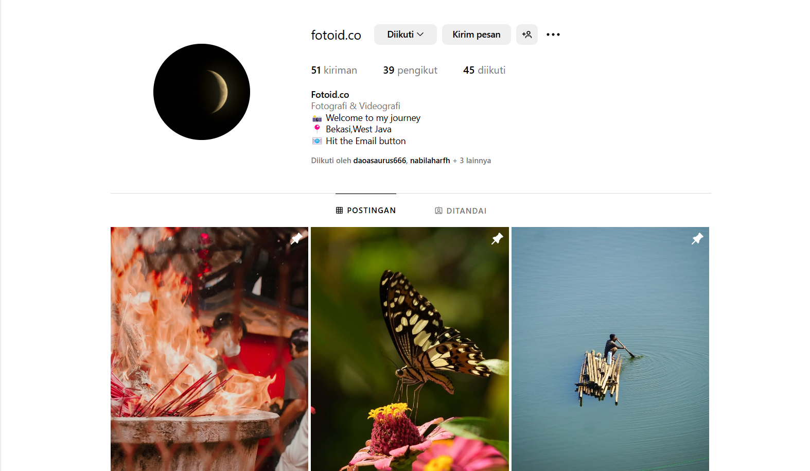
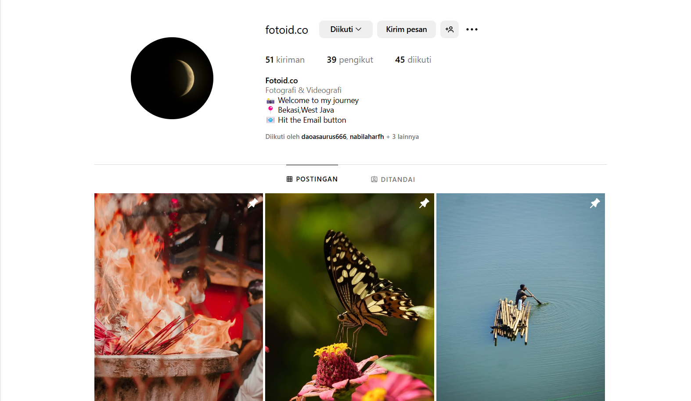

My Portfolio
Check out some of my recent projects
Finance Tracker Application


Pada semester 3 tahun 2023, saya mengembangkan dua proyek berbasis web: Finance Tracker App, aplikasi untuk mencatat transaksi, memantau keuangan, dan menampilkan grafik analisis; serta Simple Login System, sistem autentikasi pengguna dengan validasi input dan antarmuka intuitif. Proyek ini dibangun menggunakan HTML, CSS, dan JavaScript, mencerminkan keahlian saya dalam pengembangan web dan desain antarmuka responsif.
Cinema Ticket Booking System


Pada semester 2, saya bersama tim mengembangkan Bioskop Kawaii, sebuah aplikasi berbasis GUI menggunakan Python (Tkinter dan PIL). Aplikasi ini mempermudah pemesanan tiket bioskop dengan fitur seperti pemilihan kursi interaktif, jadwal tayang, dan pembayaran digital. Proyek ini dirancang untuk memberikan pengalaman pemesanan tiket yang efisien dan intuitif.
Database and Management with Microsoft Access


Proyek ini berfokus pada pembuatan basis data menggunakan Microsoft Access untuk mendukung sistem informasi manajemen. Dalam proyek ini, saya merancang tabel, relasi antar entitas, serta fitur-fitur seperti formulir input, laporan, dan kueri untuk pengambilan data. Proyek ini bertujuan untuk meningkatkan efisiensi pengelolaan data dalam organisasi atau sistem, dengan memastikan akurasi dan kemudahan akses informasi.
Mental Healthcare Platform : End-to-End Development
.png)
.png)
.png)
.png)
.png)
Proyek ini melibatkan pengembangan dan pengujian platform berbasis web yang bertujuan untuk menyediakan layanan kesehatan mental. Fitur utama mencakup konsultasi daring dengan profesional, artikel kesehatan mental, dan direktori layanan kesehatan mental. Melalui usability testing menggunakan prototipe berbasis Wix, proyek ini memastikan pengalaman pengguna yang optimal dalam navigasi, desain, dan efisiensi fitur. Dengan hasil evaluasi positif dari pengguna, proyek ini berhasil memberikan solusi inovatif untuk mendukung akses layanan kesehatan mental.
Smart Data Filtering for Web-Based Information System
Mengembangkan sistem informasi berbasis web sebagai bagian dari proyek mata kuliah Desain Basis Data. Sistem ini memungkinkan pengguna untuk melihat dan memfilter data teman yang dikategorikan, seperti 'Teman Belajar,' 'Teman Bermain Game,' dan lainnya. Dibangun menggunakan PHP, MySQL, HTML, dan CSS, proyek ini dilengkapi dengan halaman depan yang ramah pengguna, pemfilteran berbasis kategori menggunakan SQL join, dan antarmuka yang responsif. Proses pengembangan mencakup desain skema basis data, integrasi backend, serta pengujian dan debugging yang intensif untuk memastikan kinerja yang optimal.
Photography
 

Saya memiliki pengalaman dalam berbagai jenis fotografi, termasuk portrait, landscape, produk, dan street photography. Dengan keahlian ini, saya mampu menangkap momen secara estetik dan bermakna, baik untuk keperluan pribadi maupun profesional. Saya juga aktif mengikuti berbagai kompetisi fotografi, yang semakin mengasah kemampuan saya dalam komposisi, pencahayaan, dan teknik fotografi lainnya. Selain sebagai bentuk ekspresi seni, saya percaya bahwa fotografi memiliki peran penting dalam dunia bisnis. Oleh karena itu, saya menghadirkan hasil foto yang dapat membantu perusahaan dalam branding, pemasaran produk, serta pembuatan konten visual berkualitas untuk berbagai platform digital dan cetak. Baik untuk keperluan komersial maupun dokumentasi profesional, saya selalu berkomitmen untuk menghasilkan karya terbaik yang sesuai dengan kebutuhan klien dan industri.